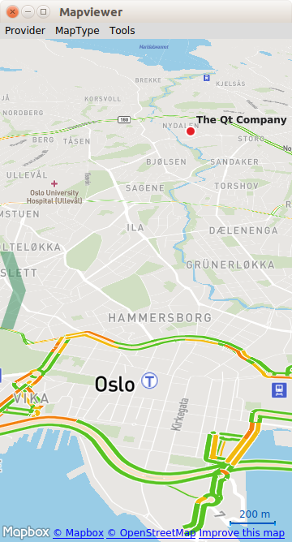

Map Viewer (QML)
The Map Viewer example shows how to display and interact with a map, search for an address, and find driving directions.

This is a large example covering many basic uses of maps, positioning, and navigation services in Qt Location. This page is divided into sections covering each of these areas of functionality with snippets from the code.
Running the Example
To run the example from Qt Creator, open the Welcome mode and select the example from Examples. For more information, visit Building and Running an Example.
The example can work with any of the available geo services plugins. However, some plugins may require additional plugin parameters in order to function correctly. Plugin parameters can be passed on the command line using the --plugin argument, which takes the form:
--plugin.<parameter name> <parameter value>
Refer to the documentation for each of the geo services plugins for details on what plugin parameters they support. The default plugin used by this example is Qt Location Open Street Map Plugin, which does not require any parameters.
Overview
QML types shown in this example:
- Displaying a map
- Finding an address
- Directions and travel routes
Displaying a Map
Drawing a map on-screen is accomplished using the MapView type, as shown below.
MapView { id: view map.zoomLevel: (maximumZoomLevel - minimumZoomLevel)/2 map.center { // The Qt Company in Oslo latitude: 59.9485 longitude: 10.7686 } }
The MapView consists of a map and extends it for basic navigation capabilities. In this example, we give the map an initial center coordinate with a set latitude and longitude. We also set the initial zoom level to 50% (halfway between the maximum and minimum).
Finding an Address (Geocoding)
To locate a certain address or place on the map uses a process called geocoding. In order to perform a geocode operation, we first need to adjust our Map object to be able to receive the result.
Receiving results of geocoding is done through a GeocodeModel:
GeocodeModel { id: geocodeModel plugin: view.map.plugin onStatusChanged: { if ((status == GeocodeModel.Ready) || (status == GeocodeModel.Error)) view.geocodeFinished() } onLocationsChanged: { if (count === 1) { view.map.center.latitude = get(0).coordinate.latitude view.map.center.longitude = get(0).coordinate.longitude } } }
To display the contents of the GeocodeModel we use a MapItemView:
MapItemView { parent: view.map model: geocodeModel delegate: pointDelegate }
MapItemView uses an object called a delegate to act as a template for the items it creates. This can contain any map object desired, but in this case we show a MapQuickItem that contains an image of a marker:
Component { id: pointDelegate MapQuickItem { id: point parent: view.map coordinate: locationData.coordinate sourceItem: Image { id: pointMarker source: "../resources/marker_blue.png" } } }
With these three objects, we have enough to receive Geocode responses and display them on our Map. The final piece is to send the actual Geocode request.
To send a geocode request, first we create an Address object, and fill it in with the desired parameters.
Address { id :fromAddress street: "Sandakerveien 116" city: "Oslo" country: "Norway" state : "" postalCode: "0484" }
Then we set geocodeModel.query to the filled in Address, and call update() on the GeocodeModel.
// send the geocode request geocodeModel.query = fromAddress geocodeModel.update()
Directions and Travel Routes
Similar to the GeocodeModel, Qt Location also features the RouteModel type, which allows information about routes (for example driving directions) between two or more points, to be received and used with a Map.
Here again, we instantiate the RouteModel as a property of our Map:
RouteModel { id: routeModel plugin : view.map.plugin query: RouteQuery { id: routeQuery } onStatusChanged: { if (status == RouteModel.Ready) { switch (count) { case 0: // technically not an error view.routeError() break case 1: view.showRouteList() break } } else if (status == RouteModel.Error) { view.routeError() } } }
To display the contents of a model to the user, we need a view. Once again we will use a MapItemView, to display the Routes as objects on the Map:
MapItemView { parent: view.map model: routeModel delegate: routeDelegate
To act as a template for the objects we wish the view to create, we create a delegate component:
Component { id: routeDelegate MapRoute { id: route route: routeData line.color: "#46a2da" line.width: 5 smooth: true opacity: 0.8
With the model, view and delegate now complete, the only missing component is some kind of control over the model to begin the Route request process. In the simplest case, we can fill out a Route request using two already available coordinates:
property variant fromCoordinate: QtPositioning.coordinate(59.9483, 10.7695) property variant toCoordinate: QtPositioning.coordinate(59.9645, 10.671)
In the next snippet, we show how to set up the request object and instruct the model to update. We also instruct the map to center on the start coordinate for our routing request.
// clear away any old data in the query routeQuery.clearWaypoints(); // add the start and end coords as waypoints on the route routeQuery.addWaypoint(startCoordinate) routeQuery.addWaypoint(endCoordinate) routeQuery.travelModes = RouteQuery.CarTravel routeQuery.routeOptimizations = RouteQuery.FastestRoute routeModel.update(); // center the map on the start coord view.map.center = startCoordinate;
This is all that is required to display a Route on the Map. However, it is also useful to be able to retrieve the written directions and explanation of the travel route. In the example, these are displayed in a ListView element. To create this content, we use a standard ListModel and ListView pair. The data in the ListModel is built from the routeModel's output:
ListView { interactive: true model: ListModel { id: routeInfoModel } header: RouteListHeader {} delegate: RouteListDelegate{ routeIndex.text: index + 1 routeInstruction.text: instruction routeDistance.text: distance } }
Inside the RouteModel, as you can see above, we add an onStatusChanged handler, which calls the showRouteList() which updates the routeInfoModel:
routeInfoModel.clear() if (routeModel.count > 0) { for (var i = 0; i < routeModel.get(0).segments.length; i++) { routeInfoModel.append({ "instruction": routeModel.get(0).segments[i].maneuver.instructionText, "distance": Helper.formatDistance(routeModel.get(0).segments[i].maneuver.distanceToNextInstruction) }); } }